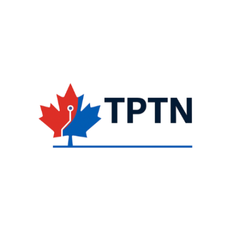

TPTN is a Canadian-built prototype designed to help government testing departments assess AI-assisted document processing, trade-rule validation, FTA eligibility logic, ESG workflow support, human-in-the-loop review, and audit-ready export records.
Reference information for departmental reviewers assessing this innovation through the Innovative Solutions Canada Testing Stream pool.
Six functional areas of the prototype are available for departmental assessment under a controlled testing arrangement.
AI-assisted parsing of fictitious or sanitized trade documents into structured, queryable data fields.
Automated validation against HS codes, permits, restricted-party indicators, and documentation requirements.
Free trade agreement eligibility assessment, rules-of-origin checks, and preferential tariff routing logic.
Structured workflow scaffolding for environmental, social, and governance disclosures linked to shipment records.
Confidence thresholds route low-certainty outputs to a designated reviewer queue for human adjudication.
Timestamped, tamper-evident audit logs and structured evidence packages suitable for regulator review.
A controlled, six-step assessment path that does not require integration with live departmental systems.
Department provides fictitious or sanitized trade documents.
TPTN ingests and extracts structured data.
AI-assisted logic checks HS codes, FTA eligibility, permits, restricted-party indicators, and documentation requirements.
Uncertain outputs are flagged for human review.
Audit records are generated with timestamped evidence.
Department reviews usability, traceability, accuracy, and testing metrics.
Each test area maps to a measurable indicator and a corresponding evidence artifact suitable for departmental review.
| Test Area | What is Measured | Example Evidence |
|---|---|---|
| Document Parsing Accuracy | Extraction accuracy across PDFs, JPEGs, and XML files | Comparison against annotated test documents |
| Trade-Rule Validation Latency | Response time for HS code, permit, restricted-party indicators, and FTA checks | System logs and test runs |
| FTA Optimization Accuracy | Alignment with published tariff schedules | Benchmark comparison |
| ESG Estimate Workflow | Variance against selected emissions methodology | Scenario comparison |
| Audit Log Integrity | Traceability and tamper-evident event capture | Audit event logs |
| Usability and Confidence | Reviewer and SME user feedback | Structured survey / walkthrough notes |
A sequenced walkthrough designed to give departmental reviewers a complete picture of TPTN's design intent and testing surface.
Practical considerations for departments preparing to assess TPTN in a controlled sandbox environment.
Clear delineation of current readiness, scope of testing, and the limits of what departmental assessment would establish.
Government of Canada departments interested in assessing TPTN may reference ISC Testing Stream Proposal ID T12-022084 when initiating testing interest.
To initiate a departmental walkthrough, request a controlled sandbox briefing, or coordinate a test scenario aligned to your assessment criteria, please use the contact details provided. Initial engagement does not require production data or live system access.